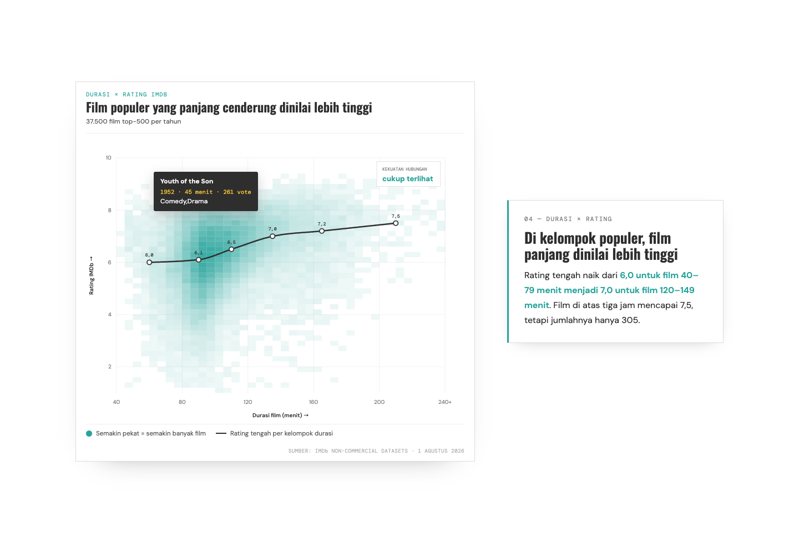
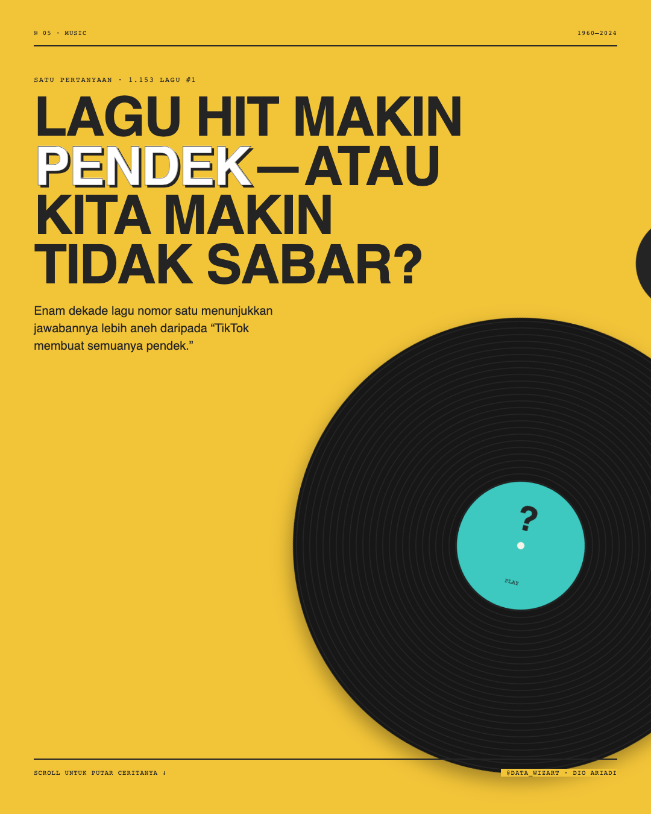

Who Wins in K-pop, and When
What separates the winners on Korean music shows
Every week, K-pop groups compete on Korean music shows. A first win is often the moment a group breaks through. We ranked the factors behind a win: the agency behind the group matters most, followed by having at least one member recruited from abroad.

Fashion Brand Color Analysis
Seven years of runway color, brand by brand
We pulled the top ten colors from every runway show on Vogue's website. Chanel keeps a narrow palette, Gucci stays consistently bold, and Louis Vuitton turned brighter after 2018.

Tracking Covid-19, the Financial Times Way
The FT's famous trajectory charts, rebuilt in R
A step-by-step rebuild of the Financial Times' Covid-19 trajectory charts, using public case data and R.

Does Miyazaki Raise the Rating?
The films he wrote and directed, against the rest of Studio Ghibli
A scroll-driven story: 21 Ghibli films plotted by IMDB and Rotten Tomatoes. The ten that Miyazaki both wrote and directed cluster in the top-right. A box plot shows their median IMDB score runs 4.5 points higher, with a tighter spread.

Saya Ganti Kimpul
When a TikTok trend sent a local tuber climbing the search charts
Searches for kimpul peaked in late July 2026. We trace what set them off, compare its nutrition against rice, and check the glycaemic-index claim doing the rounds. Story in Indonesian.

Are Movies Really Getting Longer?
Popular films are stretching out; the full catalogue is not
Across 37,500 popular films spanning 75 years, we track how runtime shifts by era and by genre — then test whether longer films actually earn higher ratings.

Are Hit Songs Getting Shorter?
Hit songs are getting shorter — but not for the first time
1,153 Billboard number ones show a pattern that doubles back: length peaked in the 1990s, then fell again toward the short-song era. Story in Indonesian.
